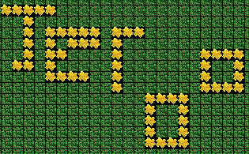
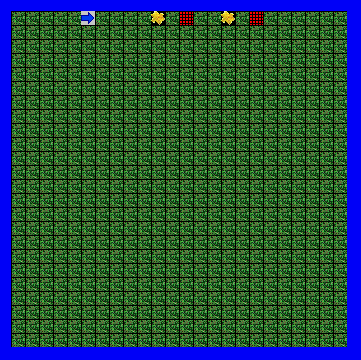
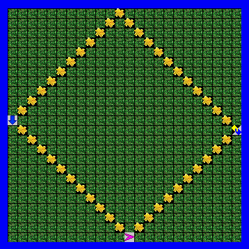
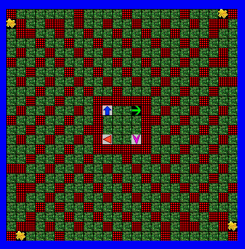
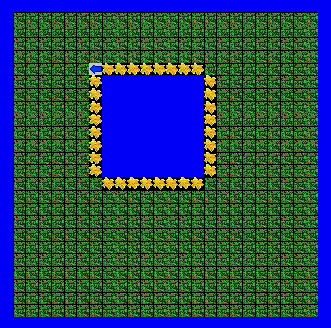
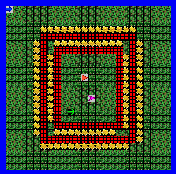
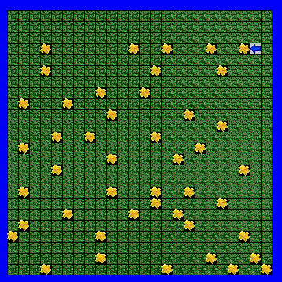
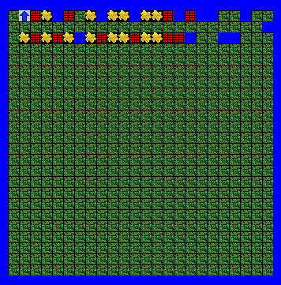
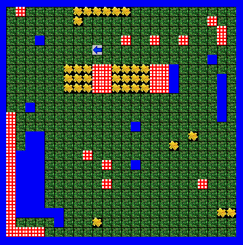

Unit 1
 
Description:
In Unit 1, we first learned the basics of Jeroo, such as making a new Jeroo and basic methods. Jeroos can hop, plant, pick, and turn. We learned that Jeroos die if they land in water or in traps, but flowers thrown into the traps make the traps disappear.
Concepts Learned:
- Instantiation: creating an instance of a Jeroo
- Constructors: where it’s facing, where it’s located, how many flowers.
- Behaviors and methods: plant, move, hop.
Unit 2
 
Description:
We learned how to create methods and call methods. Methods can be used when you have a repeating behavior. You decide what behavior you want the Jeroo to do, type it into Jeroo Methods within brackets with a method name and parentheses. Then you call the method in main method.
Concepts Learned:
- Creating a method: behaviors that are performed by Jeroos.
- Calling a method: simpler way of accessing behaviors that can be performed by all Jeroos.
Unit 3
 
Description
We learned how to create while loops. Instead of repeatedly telling the Jeroo to perform a series of behaviors, it can perform certain tasks when a boolean statement is true. For example, while it is clear ahead, the Jeroo will hop.
Concepts Learned:
- While loops: checks if something is true before running the methods within the loop.
Unit 4
 
In Unit 4, we learned how to use if statements. If statements checks once if something is true/false. It’s different from a while loop in that the while loop keeps running until a boolean statement is false.
Concepts Learned:
- If statements: checks if something is true or false.
- Else: to do something else if the boolean statement is false.
- Else if: to select one of many choices.